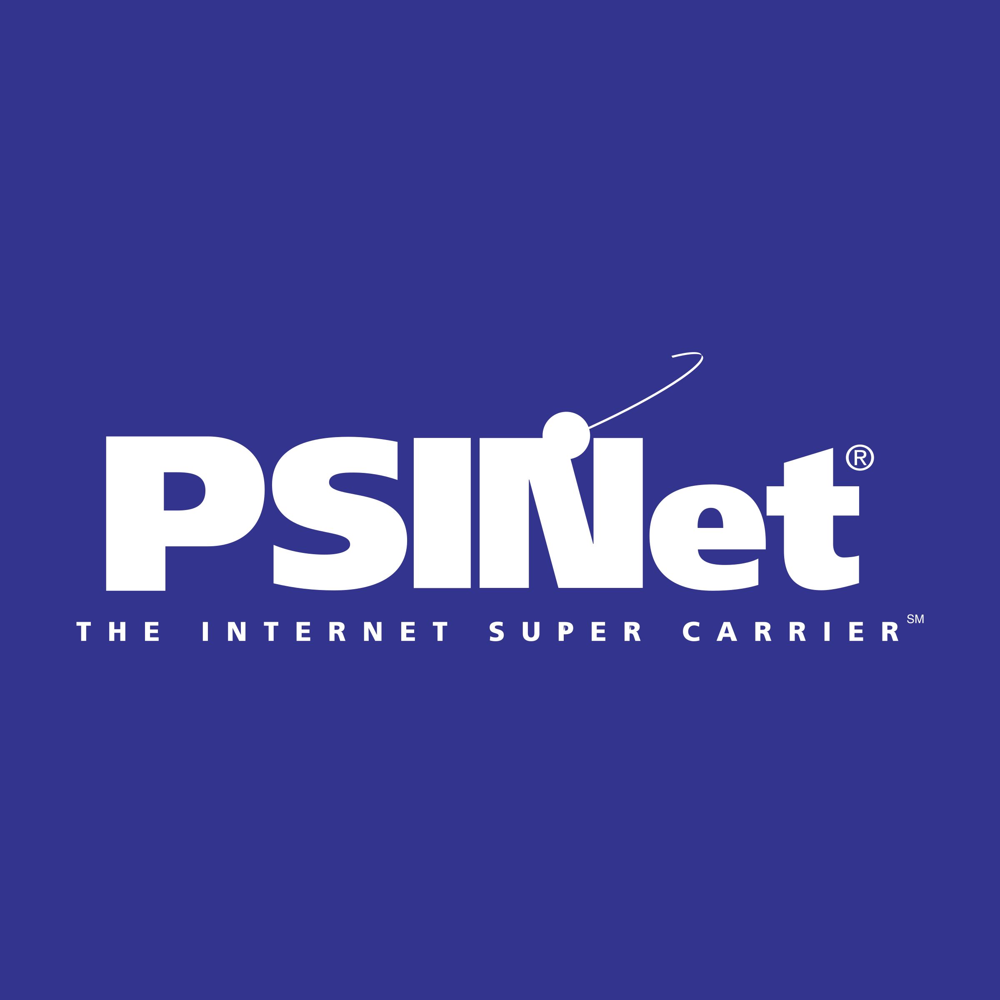

技術と開発
コンピューターゲームと化学工学から、ネットワーク、音声通信、そして30年ぶりの開発へ。
最初はゲームから
コンピューターとの出会いはゲームでした。Apple Trek、Lode Runner、Telegardをよく遊びました。友人とプログラムの載った雑誌を買い、掲載されたコードを一緒に打ち込んだこともあります。ペアプログラミングではありません。当時はまだ、そんな言葉もなかったはずです。
ただ、コンピューターを仕事にしたいかどうかは分かりませんでした。叔父と祖父にならい、ライス大学で化学工学を学び、環境工学を専門にしました。
もう一度、手を動かす
30年ぶりに開発に戻っています。Unixに触れた経験があり、ネットワークやソフトウェア事業にも長く関わってきましたが、プログラミングは言語やフレームワークをまたいで学び直しているところです。アルゴリズムやデータ構造、ソフトウェア工学を体系的に学んだわけではありません。
AIを使うと、アイデアをつくって試すまでが速くなります。ただ、結果を判断するには、自分でも仕組みを理解する必要があります。公開しているものはGitHubにあります。
インターネットの仕事
1990年代半ば、日本でコンピューターのコンサルティングやインターネット基盤の仕事を始めました。PSINetでは事業の成長に伴い、約4年間で9つの役割を経験しました。技術や顧客対応から、事業の一部を運営する仕事までありました。

電話サービスでは、技術と顧客の期待の違いがよく見えました。技術的には合理的でも、FAXを接続できないという理由で導入できないことがあります。
以前の資料とインタビュー
IP電話の神話、現実、将来 · 2006年のICA講演。英語。
企業向けVoIP · 2004年。英語。
日本のインターネットマーケティング · 上智大学での講演資料。英語。
You know it don't come easy · 2008年のJapan Incによる人物紹介とインタビュー。執筆者はHugh Ashtonで、ジム本人の記事ではありません。